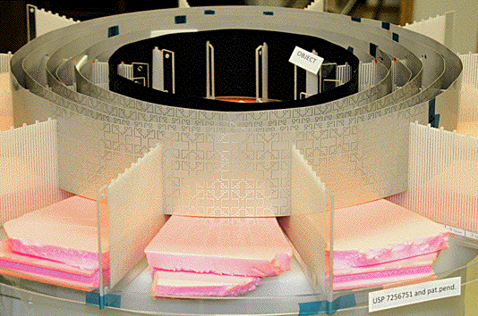
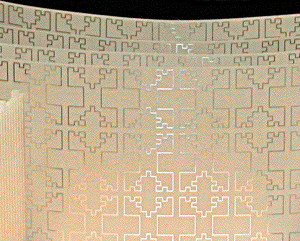
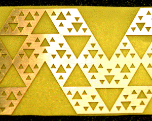

| On Tuesday, August 28, 2012, U.S. patent number 8,253,639 was issued to Nathan Cohen and his group at FracTenna, for a wide-band microwave invisibility cloak, based on fractal antenna geometry. |
|  |
| The antenna consists of an inner ring, the boundary layer, that prevents microwaves from being transmitted across the inside of this ring. This is the region that will be invisible to outside observers. Surrounding the boundary layer are six concentric rings that guide microwaves around the boundary layer, to reconverge at the point antipodal to where they entered the cloak. |
|   |
| On the left is a magnification of one of the outer rings of the cloak. On the right is the boundary layer fractal. |
| If fabricated at the sub-micron scale, instead of the current mm scale, this technology should act as an optical invisibility cloak. |
| In late August, 2012, Cohen's group cloaked a person. Interesting times ahead. |